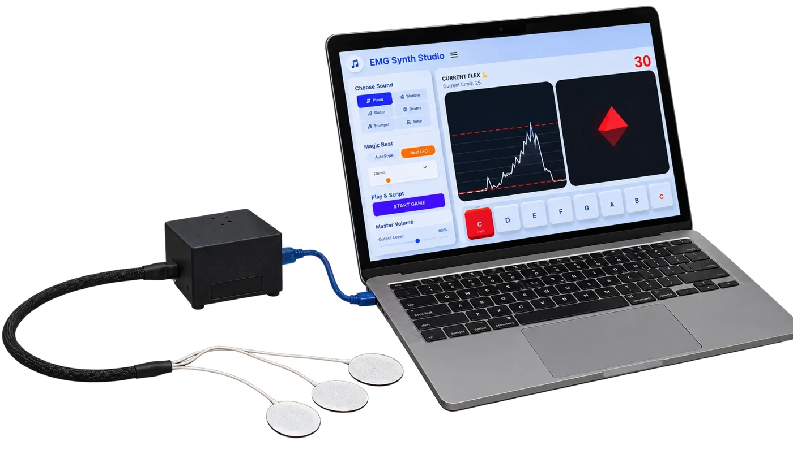

// final buildMuscle to Music: EMG Instrument
Built for the music therapy program at the William E. Carter School, this assistive instrument lets students with limited movement below the neck play along in music class using their jaw and neck muscles.
- Captured neck and jaw muscle signals with Myoware EMG sensors
- Programmed real-time signal processing that turns EMG data into musical notes
- Integrated the sensor circuit with a teammate's Arduino code on a 5-person team
Arduino UnoMyoware 2.0Signal Processing3D PrintingAssistive Tech